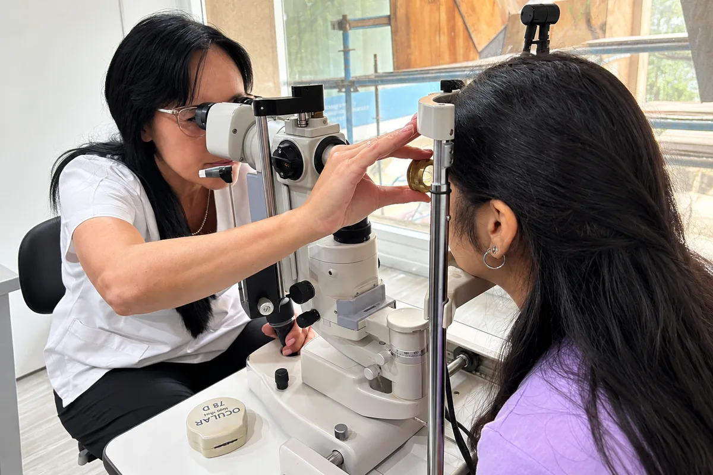

Especialidad
Neurooftalmología
Cuando el problema no está en el ojo sino en el camino que lleva la imagen al cerebro.
En pocas palabras
Qué es y qué tratamos
La neurooftalmología estudia las alteraciones visuales que se originan en el nervio óptico, en las vías visuales o en los nervios que mueven los ojos. Son cuadros donde el examen del ojo puede ser normal y, sin embargo, la persona ve mal, ve doble o tiene una pupila distinta. Requieren una mirada especializada y, con frecuencia, el trabajo conjunto con neurología.

Preguntas frecuentes
Sobre neurooftalmología
¿Qué es la neurooftalmología?
La subespecialidad que estudia los problemas visuales de origen neurológico: el nervio óptico, las vías que llevan la imagen al cerebro y los nervios que controlan el movimiento de los ojos y las pupilas.
¿Cuándo consultar con un neurooftalmólogo?
Ante pérdida de visión sin una causa clara en el ojo, visión doble, alteraciones de las pupilas, dolor al mover el ojo con visión borrosa o defectos del campo visual.
Veo doble desde hace unas horas. ¿Es urgente?
Sí. La visión doble de aparición brusca requiere evaluación inmediata, porque puede reflejar un problema neurológico que necesita tratamiento rápido.
¿Trabajan con neurólogos?
Sí. Muchos cuadros se abordan en conjunto con neurología y otras especialidades, y el instituto coordina esa derivación cuando es necesaria.
Turnos
Consultá con los especialistas en neurooftalmología
Lunes a viernes de 7:30 a 19:30 en Bv. Chacabuco 879, Nueva Córdoba. Para urgencias, guardia las 24 horas.